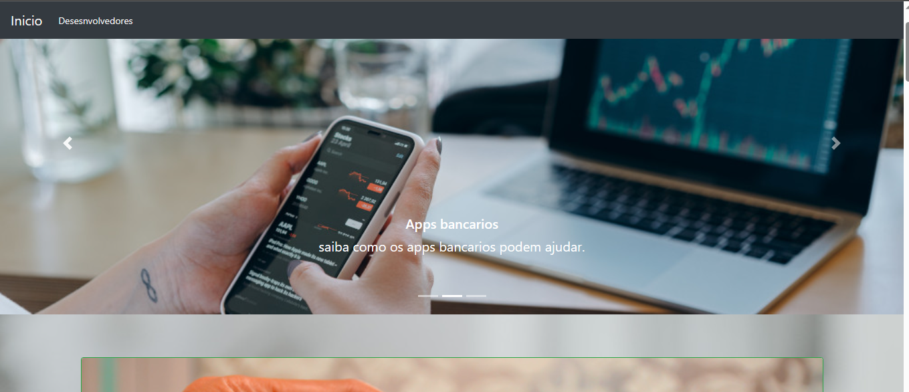

24 de outubro de 2021
desenvolvimento de um site de educação financeira

Em outubro de 2021 foi finalizado o desenvolvimento de um site/blog de conscientização financeira. Desenvolvido através do projeto integrador da faculdade de ciências da computação, juntamente com os estudantes de administração e contabilidade.